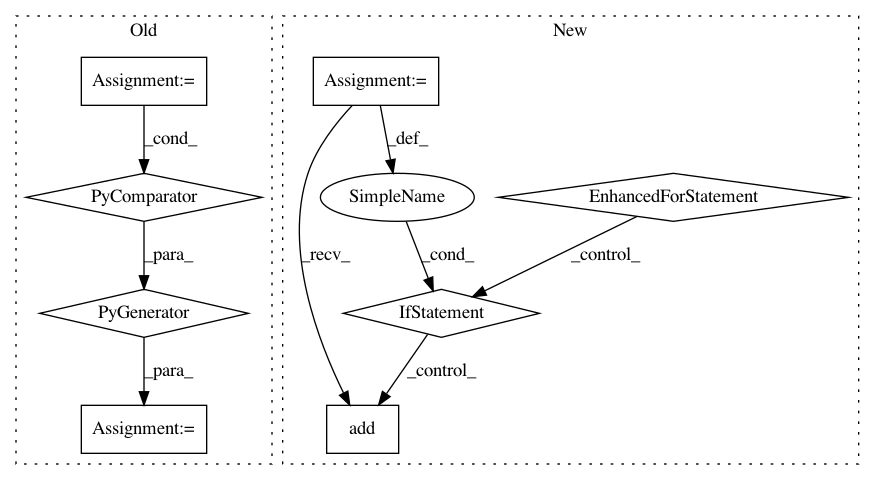

3f490de2c61c51cdf7cb78c8217842d2a9232758,src/python/pants/engine/legacy/change_calculator.py,EngineChangeCalculator,iter_changed_target_addresses,#EngineChangeCalculator#Any#,98
Before Change
return
// For dependee finding, we need to parse all build files.
product_iter = (t
for targets in self._engine.product_request(HydratedTargets, [DescendantAddresses("")])
for t in targets.dependencies)
graph = _HydratedTargetDependentGraph.from_iterable(product_iter)
if changed_request.include_dependees == "direct":
for address in graph.dependents_of_addresses(changed_addresses):
yield address
After Change
pass
if changed_request.include_dependees == "direct":
emitted = set()
for address in changed_addresses:
for dependee in graph.dependents_of(address):
if dependee not in emitted:
emitted.add(dependee)
yield dependee
elif changed_request.include_dependees == "transitive":
for target in graph.transitive_dependees_of_addresses(changed_addresses):
yield target.address
In pattern: SUPERPATTERN
Frequency: 3
Non-data size: 8
Instances
Project Name: pantsbuild/pants
Commit Name: 3f490de2c61c51cdf7cb78c8217842d2a9232758
Time: 2017-04-04
Author: stuhood@twitter.com
File Name: src/python/pants/engine/legacy/change_calculator.py
Class Name: EngineChangeCalculator
Method Name: iter_changed_target_addresses
Project Name: keras-team/keras
Commit Name: 555ca942df407b8c1bf1d48383c60fa1bf09cc1d
Time: 2019-08-28
Author: francois.chollet@gmail.com
File Name: keras/engine/network.py
Class Name: Network
Method Name: losses
Project Name: probcomp/bayeslite
Commit Name: eeec3413dd672bd4838c83b131586f7e7b5c254d
Time: 2015-06-04
Author: riastradh+probcomp@csail.mit.edu
File Name: src/crosscat.py
Class Name: CrosscatMetamodel
Method Name: _crosscat_get_rows